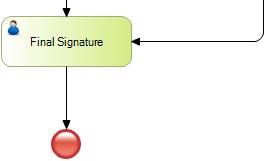

This is the end event you will see (and use) most of the time. It is always used to mark the end of the process.
When a business process model reaches an end event, it is complete. When a subprocess reaches an end event, the process flow returns to the parent process.
The none end event specifies that there is no other special behavior associated with the end of the process.
An End event can't have outgoing connectors. Its use is optional, and if it isn't used, any activity without outgoing connectors shows the end of the process flow.

Objects: Business Process Diagram
Terminate End Event
Signal End Event
Error End Event
| Backlinks | ||
| BPD End Events | Error End Event in BPD | Toc:GeneXus BPM Suite |
| Message End Event in BPD | Signal End Event in BPD | Terminate End Event in BPD |